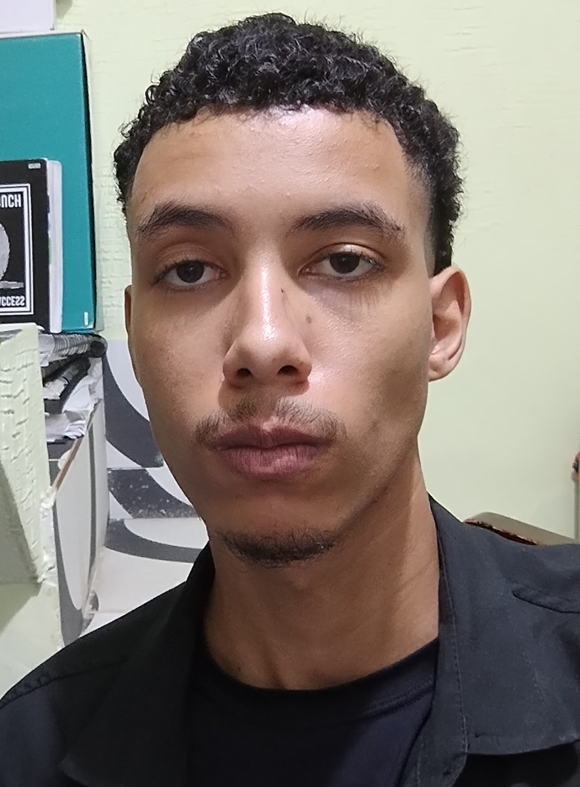

Fabricio Silva Miranda
Ciêntista da Computação


Sobre mim
Meu nome é Fabricio Silva Miranda e sou estudante de Ciência da Computação. Atualmente, atuo como desenvolvedor front-end, trabalhando com a criação de interfaces de usuário e aprimorando a experiência digital dos usuários. Tenho uma grande paixão por tecnologia e busco sempre aprender novas ferramentas e técnicas para aplicar nos meus projetos. Meu foco é construir soluções funcionais e visualmente agradáveis, garantindo que os usuários tenham uma navegação fluída e intuitiva. Estou sempre em busca de novos desafios e oportunidades para crescer como profissional, enquanto me mantenho atualizado com as últimas tendências e inovações do mercado de tecnologia. Meu objetivo é continuar evoluindo na área e contribuir para a construção de produtos digitais cada vez mais eficientes e impactantes.
Projetos